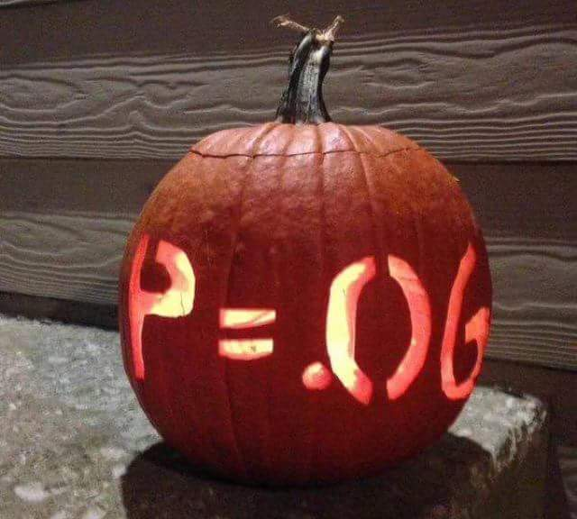

{{% alert note %}} Thursday, October 28, 2021 {{% /alert %}}
Today we continue looking at multivariate regression, and see how the introduction of additional variables affects our model: the interpretation of the marginal effects (and we will measure an example of omitted variable bias), the standard errors of the estimators, and the goodness of fit of the regression.
We continue the extended example about class sizes and test scores, which comes from a (Stata) dataset from an old textbook that I used to use, Stock and Watson, 2007. Download and follow along with the data from today’s example:1
I have also made a RStudio Cloud project documenting all of the things we have been doing with this data that may help you when you start working with regressions:
Below, you can find the slides in two formats. Clicking the image will bring you to the html version of the slides in a new tab. Note while in going through the slides, you can type h to see a special list of viewing options, and type o for an outline view of all the slides.
The lower button will allow you to download a PDF version of the slides. I suggest printing the slides beforehand and using them to take additional notes in class (not everything is in the slides)!
{{% slide-links %}}
Today you will be working on R practice problems on multivariate regression. Answers will be posted later on that page.
Problem Set 4 is due by the end of the day on Thursday, November 4.

Note this is a .dta Stata file. You will need to (install and) load the package haven to read_dta() Stata files into a dataframe.↩︎